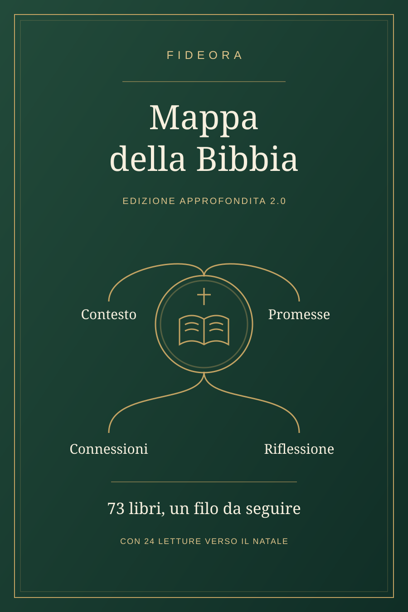

Orientati
Trova il libro, il suo posto nella Bibbia e il filo del racconto.
La Mappa della Bibbia · Una nuova profondità di lettura
Dalla Genesi all’Apocalisse, una guida visiva per orientarti nelle Scritture. Ora con schede riscritte, connessioni spiegate e 24 letture verso il Natale.

Una mappa per orientarti. Un cammino per approfondire.
98 pagine in italiano · Da leggere al tuo ritmo
Il passo successivo nel tuo studio
Un nome che ricorre. Una promessa citata nel Vangelo. Una pagina che sembra lontana dalle altre. A volte la difficoltà è trovare il contesto che dà senso a ciò che stai leggendo.
La nuova Mappa conserva il cuore della versione originale: orientarti nei 73 libri con una struttura visiva. La revisione aggiunge percorsi interni, rimandi spiegati e domande per passare dalla lettura alla riflessione.
Trova il libro, il suo posto nella Bibbia e il filo del racconto.
Apri un brano nella tua Bibbia, con una direzione da seguire.
Scopri perché una promessa, un’immagine o un tema riappare.
Raccogli una scoperta, una domanda e una risposta per la tua vita.
Dentro il libro
Tre pagine estratte dal manoscritto di questa edizione. Puoi aprirle e ingrandirle per leggere i dettagli.
Il layout accompagna il contenuto: nomi chiari, riferimenti da aprire e una struttura da ritrovare ogni volta.
Che cosa ricevi nella nuova edizione
La guida completa, in un unico volume.
Ogni scheda comprende una sintesi, il percorso del libro, le persone principali, un collegamento spiegato, un’indicazione per leggere con attenzione e una domanda di riflessione. Con riferimenti per aprire la tua Bibbia.
Canone dell’Antico e del Nuovo Testamento, due quadri del percorso narrativo, una guida ai generi letterari e un confronto fra i quattro Vangeli.
Creazione e nuova creazione; la promessa ad Abramo e il Natale; Pasqua e liberazione; alleanza e cuore nuovo; Tempio e presenza di Dio. Ogni percorso indica i brani da confrontare e spiega il legame.
Una guida a Matteo 1–2, Luca 1–2 e al prologo di Giovanni; una pagina per distinguere testo e tradizione; 24 letture con domanda e gesto quotidiano. Puoi iniziare quando vuoi.
Una traccia riutilizzabile per annotare brano, collegamento, domanda e risposta. E sette letture dai Vangeli per proseguire anche dopo il Natale.
Un motivo per iniziare adesso
Perché Matteo comincia da Abramo e Davide? Che cosa distingue il suo racconto da quello di Luca? Come si collega il Verbo fatto carne alla creazione?
Il percorso di 24 letture ti accompagna dalle promesse ai racconti della nascita, fino al significato dell’incarnazione. Ogni tappa offre un brano, una domanda e un gesto.
Scopri l’edizione completaLuca 1,26–38
Maria ascolta, domanda e risponde. Il racconto presenta una fiducia che coinvolge una persona concreta e richiama le promesse a Davide.
Quale domanda posso portare nella fede senza vergogna?
Un percorso personale · Da seguire al tuo ritmo
Dalla prima versione alla nuova edizione
Il tuo prossimo passo
Mappa della Bibbia · Edizione Approfondita 2.0
Un unico volume in italiano · 98 pagine
Anteprima della nuova edizione. Le pagine mostrate sono estratte dal manoscritto completo.
Il volume è digitale in formato PDF; non è prevista spedizione. Le 24 letture sono un percorso personale, distinto dal calendario liturgico ufficiale. Questa guida accompagna il testo della Bibbia e non lo sostituisce.
Per lo studio di ogni giorno
Se cerchi anche uno spazio per leggere, raccogliere riflessioni e pregare dal telefono, puoi conoscere Fideora e scegliere il percorso più adatto a te.
Scopri l’app FideoraFideora Premium è un’offerta in abbonamento distinta dall’acquisto del volume.
Prima di iniziare
Sì. Le schede aiutano a orientarti nel libro e indicano un primo brano da leggere. Puoi cominciare dai Vangeli e usare le connessioni quando vuoi approfondire.
Le 73 schede sono state riscritte in una struttura uniforme. La nuova edizione comprende riferimenti da aprire, cinque mappe delle connessioni, indicazioni di lettura e il percorso di 24 letture per il Natale. Le anteprime mostrano pagine effettive di questo volume.
Sì. I 73 libri, i quadri d’insieme, le mappe delle connessioni e il quaderno servono durante tutto l’anno. La sezione del Natale è un percorso aggiuntivo, da iniziare al tuo ritmo.
È una guida di studio dei 73 libri, con sintesi originali e riferimenti. Non contiene il testo integrale della Bibbia. Per le letture apri la tua edizione, ad esempio la CEI 2008.
No. L’acquisto del volume è un pagamento unico. Fideora Premium è un’offerta separata per chi desidera anche l’app; prezzo e rinnovo sono indicati nella sua pagina.
No. Puoi dedicare una breve sessione a un brano e alla sua mappa. I tempi dipendono dalla lunghezza del testo e dal livello di approfondimento che scegli.
La prossima pagina